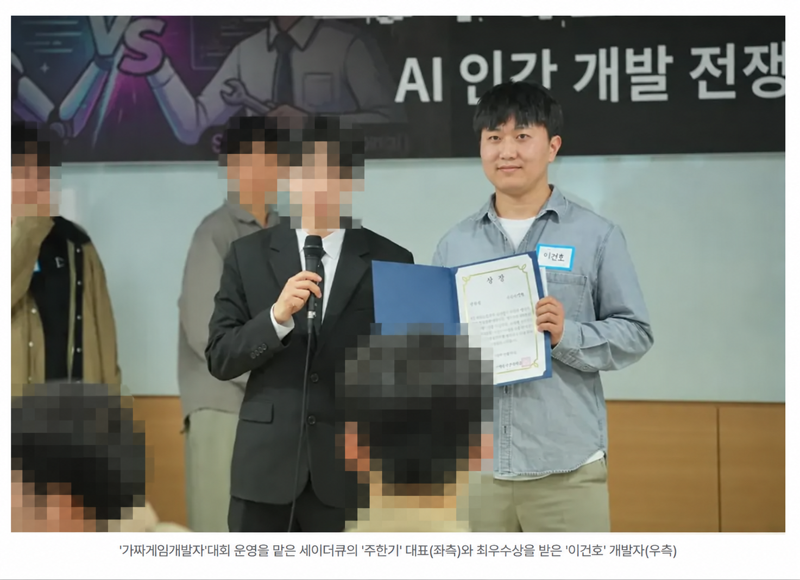

가짜게임개발자: AI 인간 개발 전쟁
멧돼지가 나타났다. 농작물을 지켜라!
2026년 5월 1일, 가짜게임개발자: AI 인간 개발 전쟁에서 우수상(1위)을 수상했습니다. 5시간 30분 안에 혼자 게임 아이디어와 규칙을 정하고 AI를 활용한 Unity 구현, 검증과 수정, PC 빌드, 시연과 발표까지 완료했습니다.
공개된 WebGL 버전은 대회 당시 제출한 PC 빌드를 기반으로 이후 발견한 버그를 추가 수정한 버전입니다.
이건호 · PERSONAL PORTFOLIO
Unity 기반 의료 VR을 개발했습니다. 현재는 모바일 게임, Android 앱, 웹 도구를 직접 만들고 운영합니다.
개인 프로젝트에서는 아이디어 구체화부터 구현, 검증, 배포까지 맡습니다. Codex와 Claude Code를 개발에 활용하며 Unity MCP와 Unity CLI도 사용합니다.
01 · AI GAME DEVELOPMENT

2026년 5월 1일, 가짜게임개발자: AI 인간 개발 전쟁에서 우수상(1위)을 수상했습니다. 5시간 30분 안에 혼자 게임 아이디어와 규칙을 정하고 AI를 활용한 Unity 구현, 검증과 수정, PC 빌드, 시연과 발표까지 완료했습니다.
공개된 WebGL 버전은 대회 당시 제출한 PC 빌드를 기반으로 이후 발견한 버그를 추가 수정한 버전입니다.
02 · RELEASED GAME
개인 프로젝트 · AI 협업 개발 · Google Play 출시

정확한 각도로 공을 발사해 적과 장애물을 연속으로 타격하는 모바일 액션 게임입니다. 짧은 조작으로 이해할 수 있지만 반사 경로와 발사 각도를 판단해야 하는 플레이를 목표로 제작했습니다.
게임 기획 · 시스템 구현 · UI · 밸런스 · 빌드 · 출시 · 업데이트
스토리 · 업그레이드 · 하드 · 무한 모드
요구사항 분해 · 기능 구현 · 리팩터링 · 문서화
Unity 6 · C# · Codex · Unity MCP · Android
Codex가 만든 코드를 직접 검토했습니다. 게임 규칙과 UI, 밸런스, 최종 구조를 결정하고 Unity 에디터와 실제 Android 기기에서 플레이와 빌드를 검증한 뒤 출시했습니다.
03 · LIVE WEB SERVICE
문서·이미지 작업부터 앱 개발까지, 직접 만들고 운영하는 웹 도구

앱을 만들며 필요했던 문서·이미지 작업을 웹 도구로 옮겼습니다. 회원가입 없이 브라우저에서 사용하는 까치툴을 개발하고 Cloudflare로 배포·운영합니다.
PDF 편집, 이미지 압축·변환, HWP·HWPX 뷰어, OCR, 앱 아이콘·스토어 스크린샷 제작 도구를 만들었습니다. 전체 서비스는 kmagpie.com에서 확인할 수 있습니다.
기능 정의 · 구현 · 결과 검토 · 배포 · 운영
Codex · Claude Code
Codex·Claude Code로 기능을 구현하고 수정합니다. 필요한 기능과 사용 흐름을 정하고 생성된 결과를 직접 검토합니다.
서비스 안에서 동작하는 AI 기능
공개 모델과 라이브러리를 웹 기능으로 연동했습니다.
UpscalerJS·TensorFlow.js와 공개 ESRGAN 모델을 연결해 사진을 2배·4배 확대하도록 구현했습니다. 브라우저에서 모델 추론을 실행하며 확대 전후 비교와 이미지 저장 기능을 제공합니다.
2배·4배 확대 도구 ↗Tesseract.js와 한국어·영어 언어 데이터를 연동했습니다. 이미지와 스캔 PDF의 글자를 인식하고 텍스트 또는 검색 가능한 PDF로 저장합니다.
이미지·PDF 원본은 서버로 업로드하지 않고 브라우저에서 처리합니다. 모델과 라이브러리를 내려받는 요청은 발생합니다.
04 · AI DEVELOPMENT
도구에 맡긴 작업과 직접 판단·검증한 일을 구분합니다.
제품이 해결할 문제와 사용자가 반복해서 사용할 이유를 먼저 정합니다.
Codex와 Claude Code로 요구사항을 작은 기능과 검증 가능한 작업으로 나눕니다.
Codex·Claude Code로 기능을 구현하고 수정합니다. 결과를 검토하며 다음 작업과 우선순위를 정합니다.
Unity 에디터와 Android 기기에서 플레이하고 빌드 오류와 UX 문제를 확인합니다.
스토어 등록, 정책 대응, 현지화와 업데이트를 진행합니다. 웹서비스는 Cloudflare로 배포하고 운영합니다.
05 · MORE RELEASED PRODUCTS
Kotlin·Android Studio·Unity로 구현한 개인 프로젝트

할 일을 퀘스트처럼 완료하고 XP, 레벨, 연속 기록으로 루틴을 이어가도록 만든 생산성 앱입니다.

상황이나 보유 재료를 기준으로 한식 메뉴를 추천하고 선택한 메뉴의 레시피 검색으로 연결하는 앱입니다.

고양이 캐릭터가 하루 한 번 포춘쿠키를 열어 짧은 운세 메시지를 보여주는 캐주얼 앱입니다.


계속 위치가 바뀌는 먹이 버튼과 폭탄 버튼을 구분해 드래곤에게 먹이를 주는 짧은 반응형 모바일 게임입니다.
06 · PROFESSIONAL EXPERIENCE
뉴베이스 제품개발팀 · 정규직 · Unity 클라이언트 개발
간호 실습을 위한 의료 VR 시뮬레이션 플랫폼 개발에 참여했습니다.
Unity · C# · XR Interaction Toolkit · Photon Fusion · WebGL · Meta Quest

뉴베이스 R&D에서 사용자 음성에 답하는 AI 환자 NPC 시제품을 구현했습니다. OpenAI Whisper·ChatGPT·TTS와 ElevenLabs TTS API를 연결하고 프롬프트 작성·테스트와 음성 출력 검증을 맡았습니다.
음성 인식(STT), 대화 생성, 음성 합성(TTS)을 연결한 클라이언트 구현 경험입니다. 연구 시제품 단계로 상용 출시 프로젝트와 구분합니다.

개발에 팀원으로 참여한 의료 시뮬레이션 VR 콘텐츠 널스베이스가 Unity Korea AWARD 2022 Best Immersive Industry를 수상했습니다.
07 · EARLIER PROJECTS

팔을 흔들어 바닷속을 이동하고 장애물을 피하며 경쟁하는 Meta Quest용 캐주얼 멀티플레이 VR 게임입니다.

AR Foundation과 Photon을 사용해 실제 공간에 타워를 배치하고 방어하는 Android AR 멀티플레이 게임입니다.

HoloLens 2와 MRTK를 사용해 컴퓨터 부품 조립 과정을 체험하는 MR 교육 콘텐츠입니다.
08 · ABOUT
Unity 클라이언트 개발 경험으로 게임·앱·웹에 필요한 기능을 구현합니다. 개인 프로젝트에서는 제품의 방향과 구조를 정하고 코드 검토, 실제 환경 검증, 출시와 업데이트까지 직접 맡습니다.
포트폴리오에는 담당 역할과 개발 과정을 정리하고, K-magpie 사이트에는 사용자가 설치하거나 바로 실행할 수 있는 결과물을 모았습니다.